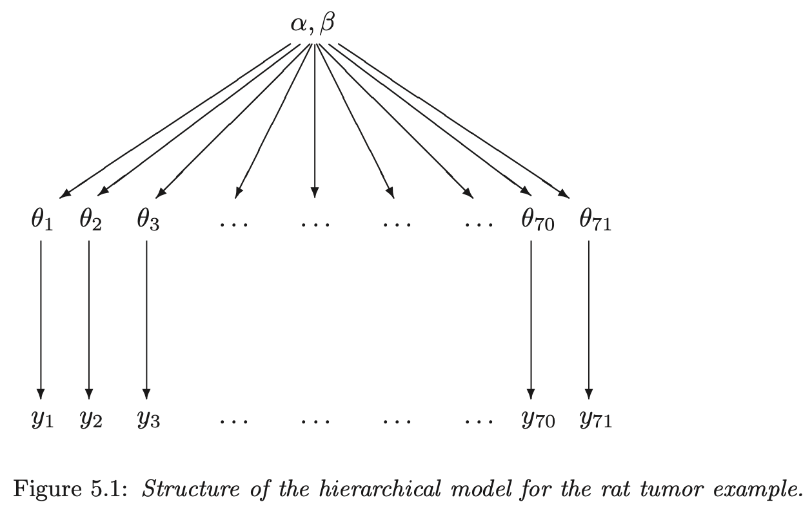
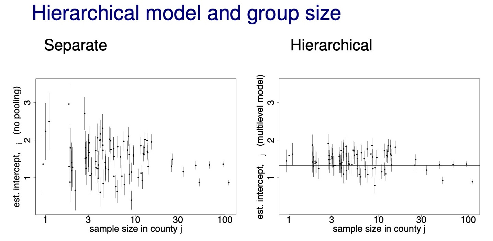

7 Section 7. Hierarchical models and exchangeability
2021-10-12
knitr::opts_chunk$set(echo = TRUE, dpi = 300, comment = "#>")
library(rstan)
library(tidybayes)
library(tidyverse)
options(mc.cores = 2)
rstan_options(auto_write = TRUE)
set.seed(659)7.1 Resources
- BDA3 chapter 5 and reading instructions
- lectures:
- slides
- Assignment 7
7.2 Notes
7.2.1 Reading instructions
- “The hierarchical models in the chapter are simple to keep computation simple. More advanced computational tools are presented in Chapters 10-12 (part of the course) and 13 (not part of the course).”
Exchangeability vs. independence
- exchangeability and independence are two separate concepts; neither necessarily implies the other
- independent identically distributed variables/parameters are exchangeable
- exchangeability is less strict condition than independence
Weakly informative priors for hierarchical variance parameters
- suggestions have changed since writing section 5.7
- section 5.7 recommends use of half-Cauchy as weakly informative prior for hierarchical variance parameters
- now recommend a “half-normal if you have substantial information on the high end values, or or half-\(t_4\) if you there might be possibility of surprise”
- “half-normal produces usually more sensible prior predictive distributions and is thus better justified”
- “half-normal leads also usually to easier inference”
7.2.2 Chapter 5. Hierarchical models
- individual parameters for groups can be modeled as coming from a population distribution
- model these relationships hierarchically
- hierarchical models can often have more parameters than data but avoid overfitting of traditional linear models
- sections
- 5.2: how to construct a hierarchical prior distribution in the context of a fully Bayesian analysis
- 5.7: weakly informative priors
1. Constructing a parameterized prior distribution
- have historical data to inform our model
- can use it to construct a prior for our new data or use it as data to inform the posterior
- probably should not use it for both though, thus favor using it directly in the model alongside our new data
- for each experiment \(j\), with data \(y_j\), estimate the parameter \(\theta_j\)
- the parameters \(\theta_j\) can come from a population distribution parameterized by \(\text{Beta}(\alpha, \beta)\)

hierarchical structure graph
5.2 Exchangeability and hierarchical models
- if no information (other than \(y\)) is available to distinguish any of the \(\theta_j\)’s, and no ordering (time) or grouping can be made, then we must assume symmetry among the parameters in the prior distribution
- this symmetry is represented probabilistically by exchangeability: the parameters \((\theta_1, \dots, \theta_J)\) are exchangeable in the join distribution if \(p(\theta_1, \dots, \theta_J)\) is invariant to permutations of the indices \((1, \dots, J)\)
- “in practice, ignorance implies exchangeability” (pg. 104)
- the less we know about a problem, the more confident we can claim exchangeability (i.e. we don’t know any better)
- exchangeability is not the same as i.i.d:
- probability of a die landing on each face: parameters \((\theta_1, \dots, \theta_6)\) are exchangeable because we think the faces are all the same, but they are not independent because the total must sum to 1
- exchangeability when additional information is available on the groups
- if the observations can be grouped in their own submodels, but the group properties are unknown, can make a common prior distribution for the group properties
- if \(y_i\) has additional information \(x_i\) so that \(y_i\) are not exchangeable, but \((y_i, x_i)\) are exchangeable, we can make a join model for \((y_i, x_i)\) or a conditional model \(y_i | x_i\)
- the usual way to model exchangeability with covariates is through conditional independence
\[ p(\theta_1, \dots, \theta_J | x_1, \dots, x_J) = \int [\prod_{j=1}^J p(\theta_j | \phi, x_j)] p(\phi|x) d \phi \]
- \(phi\) is unknown, so it gets a prior distribution, too \(p(\phi)\)
- the posterior distribution is of the vector \((\phi, \theta)\)
- thus the joint prior is: \(p(\phi, \theta) = p(\phi) p(\theta|\phi)\)
- joint posterior:
\[ \begin{aligned} p(\phi, \theta | y) &\propto p(\phi, \theta) p(y|\phi, \theta) \\ &= p(\phi, \theta) p(y|\theta) \end{aligned} \]
- posterior predictive distributions
- get predictions on both levels
5.3 Bayesian analysis of conjugate hierarchical models
- analysis derivation of conditional and marginal distributions
- write the (unnormalized) joint posterior density \(p(\theta, \phi | y)\) as a product of the hyperprior \(p(\phi)\), the population distribution \(p(\theta|\phi)\) and the likelihood \(p(y|\theta)\)
- determine the conditional posterior density of \(\theta\) given \(\phi\): \(p(\theta | \phi, y)\)
- estimate \(\phi\) from its marginal posterior distribution \(p(\phi|y)\)
- drawing simulations from the posterior distribution
- draw \(\phi\) from \(p(\phi|y)\)
- draw \(\theta\) from its conditional posterior distribution \(p(\theta | \phi, y)\) using the values of \(\phi\) from the previous step
- draw predictive values \(\tilde{y}\) given the values of \(\theta\)
- example on rat tumors is a good demonstration of the shrinkage of parameter estimates in a hierarchical model
- the 1:1 line represents where the posteriors would be for a non-pooling model
- can see the shrinkage of the extreme values towards the average
- the effect is stronger for experiments with fewer rats
rat tumor model posterior
5.4 Normal model with exchangeable parameters
- drawing posterior predictive samples:
- for new data \(\tilde{y}\) of existing groups \(J\), use the posterior distributions for \((\theta_1, \dots, \theta_j)\)
- for new data \(\tilde{y}\) for \(\tilde{J}\) new groups:
- draw values for the hyperparameters \(\mu, \tau\) (in this case)
- draw \(\tilde{J}\) new parameters \((\tilde{\theta}_1, \dots, \tilde{\theta}_\tilde{J})\) from \(p(\tilde{\theta} | \mu, \tau)\)
- draw \(\tilde{y}\) given \(\tilde{\theta}\)
5.5 Example: parallel experiments in eight schools
- a full example of a Bayesian hierarchical modeling process and analysis
5.6 Hierarchical modeling applied to a meta-analysis
- another good example of analyzing the results of a Bayesian hierarchical model
- notes the importance of interpreting both the mean and standard error hyperparameters to interpret the distribution of possible parameter values
5.7 Weakly informative priors for variance parameters
- “It turns out the the choice of ‘noninformative’ prior distribution can have a big effect on inferences,” (pg. 128)
- uniform prior distributions will often lead to overly-dispersed posteriors
- this is especially true for the standard error term of a hyperparameter when there are few groups
- half-Cauchy is often a good balance between restricting the prior to reasonable value but with fat enough tails to allow for uncertainty
- particularly good for variance parameters of hierarchical models with few groups
- uniform prior distributions will often lead to overly-dispersed posteriors
7.2.3 Lecture notes
‘7.1. Hierarchical models’
- description of the diagram of a hierarchical model
- box: known value
- double box: indicates a fixed experimental value (e.g. decided how many rats to include in an experiment)
- circle: unknown parameter
- box with the subscript \(j\): indicates that everything within the box is repeated \(J\) times
- box: known value

hierarchical box diagram
- hierarchical model shrinkage effects with sample size
- below example shows how shrinkage is stronger for data points with smaller sample size (county radon example)

chrinkage with sample size
- below, I replicate the 8-schools model in Stan and try to make the plot of \(\theta\) over \(\tau\)
schools_data <- list(
J = 8,
y = c(28, 8, -3, 7, -1, 1, 18, 12),
sigma = c(15, 10, 16, 11, 9, 11, 10, 18)
)
eight_schools <- stan(
file = here::here("models", "8-schools.stan"),
data = schools_data,
chains = 4,
warmup = 1000,
iter = 2000,
cores = 2,
refresh = 0
)
eight_schools#> Inference for Stan model: 8-schools.
#> 4 chains, each with iter=2000; warmup=1000; thin=1;
#> post-warmup draws per chain=1000, total post-warmup draws=4000.
#>
#> mean se_mean sd 2.5% 25% 50% 75% 97.5% n_eff Rhat
#> mu 7.93 0.10 5.11 -2.36 4.67 7.87 11.05 18.19 2776 1
#> tau 6.51 0.13 5.48 0.18 2.45 5.28 9.10 20.66 1651 1
#> eta[1] 0.37 0.01 0.97 -1.62 -0.26 0.38 1.04 2.22 4447 1
#> eta[2] 0.01 0.01 0.86 -1.71 -0.54 0.00 0.56 1.73 5131 1
#> eta[3] -0.20 0.01 0.91 -2.00 -0.80 -0.22 0.41 1.61 5300 1
#> eta[4] -0.04 0.01 0.88 -1.80 -0.63 -0.05 0.55 1.70 4508 1
#> eta[5] -0.33 0.01 0.86 -1.98 -0.91 -0.36 0.23 1.43 4005 1
#> eta[6] -0.20 0.01 0.89 -1.95 -0.79 -0.21 0.37 1.63 4784 1
#> eta[7] 0.33 0.01 0.90 -1.49 -0.27 0.38 0.93 2.07 4682 1
#> eta[8] 0.05 0.01 0.92 -1.78 -0.54 0.06 0.66 1.87 5721 1
#> [ reached getOption("max.print") -- omitted 9 rows ]
#>
#> Samples were drawn using NUTS(diag_e) at Wed Feb 9 06:38:55 2022.
#> For each parameter, n_eff is a crude measure of effective sample size,
#> and Rhat is the potential scale reduction factor on split chains (at
#> convergence, Rhat=1).theta_tau_post <- eight_schools %>%
spread_draws(theta[school], tau) %>%
mutate(school = purrr::map_chr(school, ~ LETTERS[[.x]]))
theta_tau_post %>%
filter(tau < 20) %>%
arrange(tau) %>%
ggplot(aes(x = tau, y = theta, color = school)) +
geom_smooth(
method = "loess", formula = "y ~ x", n = 250, size = 0.8, alpha = 0.1
) +
scale_x_continuous(expand = expansion(c(0, 0))) +
scale_y_continuous(expand = expansion(c(0.02, 0.02))) +
scale_color_brewer(type = "qual", palette = "Set1") +
theme_classic()
‘7.2. Exchangeability’
- exchangeability: parameters \(\theta_1, \dots ,\theta_J\) (or observations \(y_1, \dots , y_J\)) are exchangeable if the joint distribution \(p\) is invariant to the permutation of indices \((1, \dots, J)\)
- e.g.: \(p(\theta_1, \theta_2, \theta_3) = p(\theta_2, \theta_3, \theta_1)\)
- exchangeability implies symmetry
- if there is no information which can be used a priori to separate \(\theta_j\) form each other, we can assume exchangeability
- ”Ignorance implies exchangeability”
sessionInfo()#> R version 4.1.2 (2021-11-01)
#> Platform: x86_64-apple-darwin17.0 (64-bit)
#> Running under: macOS Big Sur 10.16
#>
#> Matrix products: default
#> BLAS: /Library/Frameworks/R.framework/Versions/4.1/Resources/lib/libRblas.0.dylib
#> LAPACK: /Library/Frameworks/R.framework/Versions/4.1/Resources/lib/libRlapack.dylib
#>
#> locale:
#> [1] en_US.UTF-8/en_US.UTF-8/en_US.UTF-8/C/en_US.UTF-8/en_US.UTF-8
#>
#> attached base packages:
#> [1] stats graphics grDevices datasets utils methods base
#>
#> other attached packages:
#> [1] forcats_0.5.1 stringr_1.4.0 dplyr_1.0.7
#> [4] purrr_0.3.4 readr_2.0.1 tidyr_1.1.3
#> [7] tibble_3.1.3 tidyverse_1.3.1 tidybayes_3.0.1
#> [10] rstan_2.21.2 ggplot2_3.3.5 StanHeaders_2.21.0-7
#>
#> loaded via a namespace (and not attached):
#> [1] nlme_3.1-153 matrixStats_0.61.0 fs_1.5.0
#> [4] lubridate_1.7.10 RColorBrewer_1.1-2 httr_1.4.2
#> [7] rprojroot_2.0.2 tensorA_0.36.2 tools_4.1.2
#> [10] backports_1.2.1 bslib_0.2.5.1 utf8_1.2.2
#> [13] R6_2.5.0 mgcv_1.8-38 DBI_1.1.1
#> [16] colorspace_2.0-2 ggdist_3.0.0 withr_2.4.2
#> [19] tidyselect_1.1.1 gridExtra_2.3 prettyunits_1.1.1
#> [22] processx_3.5.2 curl_4.3.2 compiler_4.1.2
#> [25] cli_3.0.1 rvest_1.0.1 arrayhelpers_1.1-0
#> [28] xml2_1.3.2 labeling_0.4.2 bookdown_0.24
#> [31] posterior_1.1.0 sass_0.4.0 scales_1.1.1
#> [34] checkmate_2.0.0 callr_3.7.0 digest_0.6.27
#> [37] rmarkdown_2.10 pkgconfig_2.0.3 htmltools_0.5.1.1
#> [40] highr_0.9 dbplyr_2.1.1 rlang_0.4.11
#> [43] readxl_1.3.1 rstudioapi_0.13 jquerylib_0.1.4
#> [46] farver_2.1.0 generics_0.1.0 svUnit_1.0.6
#> [49] jsonlite_1.7.2 distributional_0.2.2 inline_0.3.19
#> [52] magrittr_2.0.1 loo_2.4.1 Matrix_1.3-4
#> [55] Rcpp_1.0.7 munsell_0.5.0 fansi_0.5.0
#> [58] abind_1.4-5 lifecycle_1.0.0 stringi_1.7.3
#> [61] yaml_2.2.1 pkgbuild_1.2.0 grid_4.1.2
#> [64] parallel_4.1.2 crayon_1.4.1 lattice_0.20-45
#> [67] splines_4.1.2 haven_2.4.3 hms_1.1.0
#> [70] knitr_1.33 ps_1.6.0 pillar_1.6.2
#> [73] codetools_0.2-18 clisymbols_1.2.0 stats4_4.1.2
#> [76] reprex_2.0.1 glue_1.4.2 evaluate_0.14
#> [79] V8_3.4.2 renv_0.14.0 RcppParallel_5.1.4
#> [82] modelr_0.1.8 vctrs_0.3.8 tzdb_0.1.2
#> [85] cellranger_1.1.0 gtable_0.3.0 assertthat_0.2.1
#> [88] xfun_0.25 broom_0.7.9 coda_0.19-4
#> [91] ellipsis_0.3.2 here_1.0.1